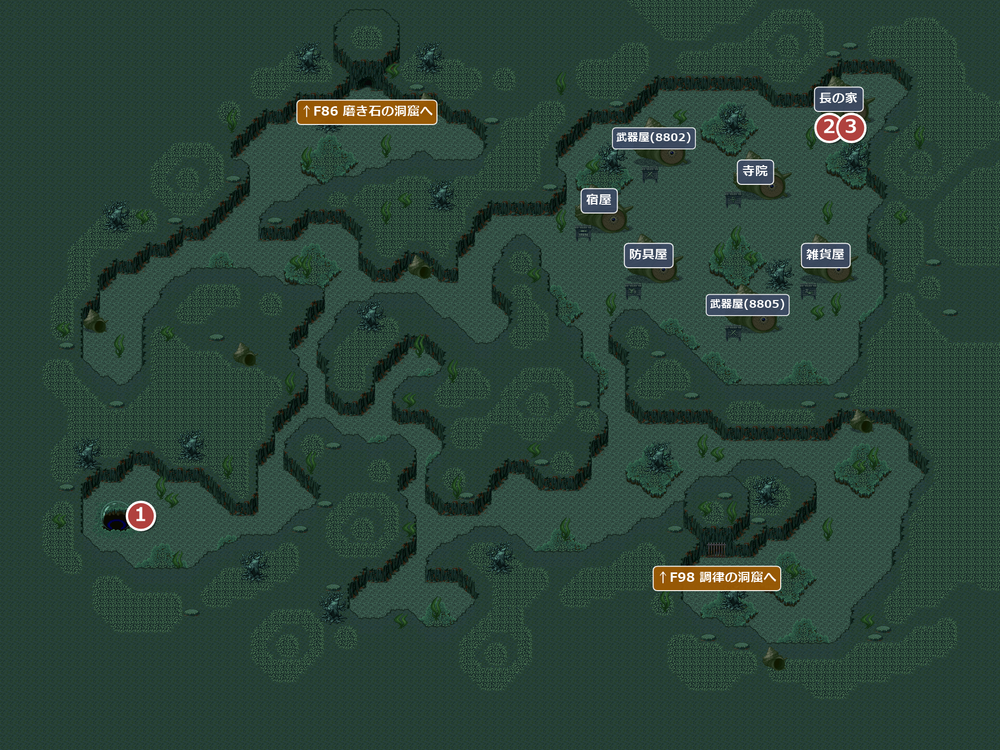
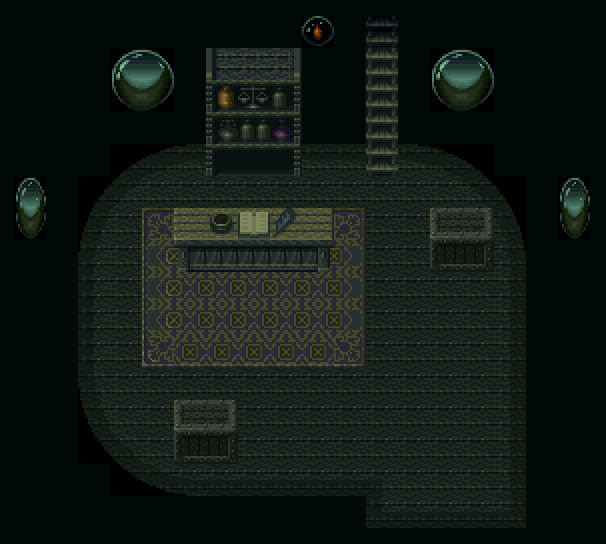
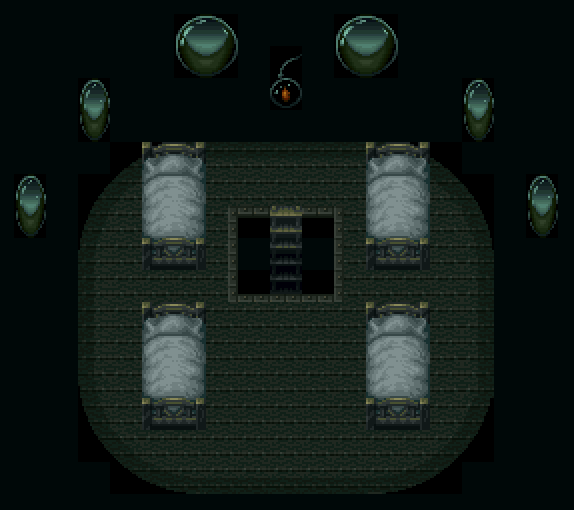
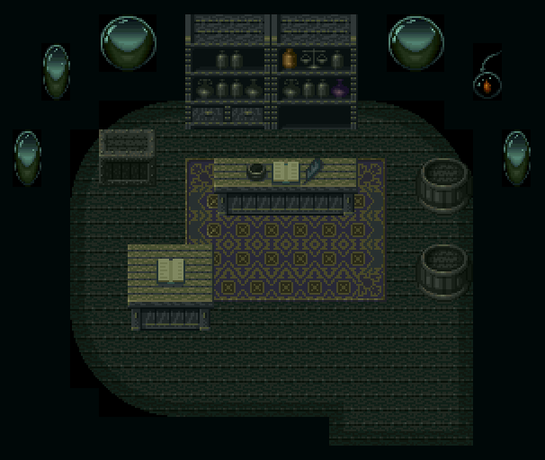
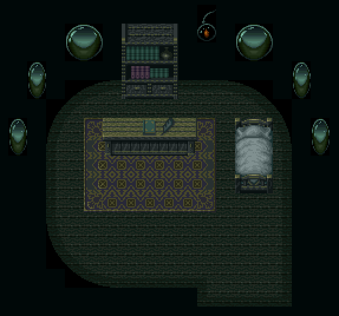
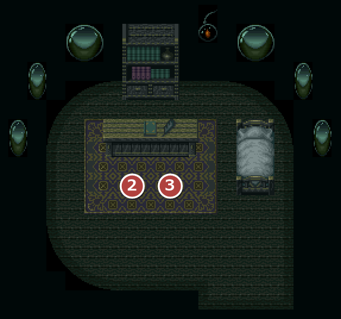

FIELD88
地下湖底
エンカウント率0.78%岩の島洞窟の古い階段から、かわうそ族に導かれて降りる水底。巻き貝の家が並ぶかわうそ族の村がある。
取り返しのつかない要素紺碧の宝珠を持って長と話すと、オードを受け取った後に強制で村の外へ出され、二度とこのエリア(かわうその村・調律の洞窟・磨き石の洞窟)には戻れない。武器屋・防具屋の最強装備の買い物など、やり残しが無いか確かめてから長に会うこと。
名前 建物・場所→ ほかの FIELD へ1メインイベント

注意かわうその村の中でも、建物の外(地下湖底)ではモンスターが出る。
エンカウント
1歩ごとに 0.78%(平均 128 歩に1回)。戦闘になったときに出る組と、その確率:
| ID | 確率 | 前列 | 後列 |
|---|---|---|---|
| 204 | 22.2% | 悪かわうそ | － |
| 205 | 22.2% | 悪かわうそ×2 | － |
| 206 | 22.2% | 泥アリ | － |
| 207 | 33.3% | 泥アリ | 悪かわうそ×2 |
イベント
1
地下湖底
場所: 到着した泡の前(X24-30 Y123-127)
水の底なのに息ができることに主人公が驚き、アイリスは古のかわうその魔法かと考える。案内してくれたかわうその姿は見えない。
次へ東の村の長の家へ(②)。
2
かわうその長
場所: 長の家(部屋8807)の長(X16 Y21)
オードを求めるなら資質を示せ、と長。南の洞窟で紺碧の原石を探し、北の洞窟の磨き手に磨いてもらった珠を持ってくれば、オードを渡すという。南の洞窟の扉が開く。
次へ南のF98 調律の洞窟へ。
F86 磨き石の洞窟をクリアしたあと
3
オード
場所: 長の家(部屋8807)の長(X16 Y21)
注意ここで長と話すと、オードを受け取った後に強制で村の外(オーパスの山道の岩の島洞窟の前)へ出され、二度とこのエリア(かわうその村・調律の洞窟・磨き石の洞窟)には戻れない。
紺碧の宝珠を渡すと、長は資質を認めてオードの主題を渡す。序奏・終奏と合わせた3つの断片がひとつになり、オードの全曲がそろう。アイリスは龍族の村へ持ち帰ろうと喜ぶ。
入手 オード全曲
オード全曲
次へ山道の岩の島洞窟の前に出る。F80 オーパスの村の船屋へ。
部屋
！武器屋2軒・防具屋・雑貨屋の4部屋は、中の作りがまったく同じ。寺院と長の家も同じ作り。
88018808かわうその宿屋・かわうその宿２Ｆ


8801元のマップは 40×20 マス。右約20マスの何もない部分を切って載せている。
8808元のマップは 40×20 マス。右約21マス・下約3マスの何もない部分を切って載せている。
8801宿泊は1人 15GOLD。
！カウンターの内側から話しかけると、「ちゃんとカウンター越しに話すぴょん。ニンゲンと言えども、礼儀はわきまえなければいけないぴょん」と断られる。
8802かわうその武器屋

元のマップは 40×20 マス。右約20マスの何もない部分を切って載せている。
| 商品名 | 値段 | |
|---|---|---|
| 力の杖 | 850 | |
| ダイヤの槍 | 1,000 | |
| マジックボウ | 900 | |
| Ｉ＃の剣 | 950 | |
| 巨大手裏剣 | 800 | |
！力の杖・ダイヤの槍・マジックボウ・巨大手裏剣は、それぞれの種類の最強装備(攻撃力)。Ｉ＃の剣(両手剣)は、もう1軒の武器屋のＯ＃の剣のほうが強い。
8805かわうその武器屋

元のマップは 40×20 マス。右約20マスの何もない部分を切って載せている。
| 商品名 | 値段 | |
|---|---|---|
| ソングダガー | 800 | |
| Ｎの剣 | 800 | |
| Ｏ＃の剣 | 1,100 | |
| 魔の斧 | 1,000 | |
！ソングダガー・Ｎの剣・魔の斧は、それぞれの種類の最強装備(攻撃力)。両手剣はＯ＃の剣より強い物があり、物語の終盤で手に入る。
8804かわうその防具屋

元のマップは 40×20 マス。右約20マスの何もない部分を切って載せている。
| 商品名 | 値段 | |
|---|---|---|
| メタルフェイス | 600 | |
| シルバースケール | 400 | |
| アイアンすねあて | 150 | |
！メタルフェイス・シルバースケール・アイアンすねあては、それぞれの部位で防御力が最強の装備。
8806かわうその雑貨屋

元のマップは 40×20 マス。右約20マスの何もない部分を切って載せている。
| 商品名 | 値段 | |
|---|---|---|
| 桃色の小ビン | 50 | |
| 白色の小ビン | 70 | |
| 銅色の小ビン | 100 | |
| 銀色の小ビン | 200 | |
| 黄金の小ビン | 400 | |
| スーパーのどあめ | 40 | |
| のどあめＤＸ | 60 | |
8803かわうそ寺院

元のマップは 40×20 マス。右約21マスの何もない部分を切って載せている。
呪いを解くのは 15GOLD。
！カウンターの内側から話しかけると、「ちゃんとカウンター越しに話すぴょん。ニンゲンと言えども、礼儀はわきまえなければいけないぴょん」と断られる。
8807かわうその長の家

元のマップは 40×20 マス。右約21マスの何もない部分を切って載せている。
2長の話 3オード
没イベント情報
- 没長の「最後の試練」 … 宝珠を渡した後に、宝珠を鍵に南の洞窟の奥のモンスターを倒してこい、と命じる台詞が入っているが、すぐオードを渡す場面へ飛ぶため出ない。退治を確かめる処理や洞窟の奥の場所は、どこにも無いかわうその長「まさしく、これは紺碧の宝珠！ では、最後の試練だ。この宝珠を持ち、南の洞窟にゆけ」「宝珠が洞窟入り口のカギとなる。洞窟に入り、奥にいるモンスターを倒し、戻ってまいれ！」かわうその長「モンスターを倒して来るのだ！」
- 没オードを渡した後の長の一言 … オードを渡した後に長に話しかけたときの台詞が入っているが、渡した直後に村の外へ出され、二度と戻れないので見られないかわうその長「汝の道はまだ長い。先を急ぐのだ！」